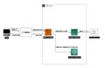

ROBOT PAYMENT TECH-BLOG
https://tech.robotpayment.co.jp/
株式会社ROBOT PAYMENTのテックブログです
フィード

AIでドキュメント解析を始めよう！自動応答システムに挑戦してみた
ROBOT PAYMENT TECH-BLOG
こんにちは、ROBOT PAYMENTエンジニアのkanemotoです！請求管理ロボの開発を担当しています。 普段は「請求管理ロボ」の開発を担当していますが、今回は少し違った挑戦をしてみました。 最近、AIを活用した自動応答システムが注目されていますが、私もその技術に興味を持ち、社内の生産性向上を目指してAIを使ったドキュメント解析と自動応答システムの仕組み作りに挑戦してみました。これはあくまで試作段階のもので、実際にすぐ使えるシステムではありませんが、AIの可能性を探る第一歩として面白い経験になったので、その過程を紹介します。 課題 ドキュメントの中から必要な情報を見つけるのは簡単ではありま…
7日前
PCI DSS v4.0 要件11.5.1.1への対応
ROBOT PAYMENT TECH-BLOG
こんにちは。サブスクペイstdのシステム基盤を担当している石橋です。 弊社ではPCI DSSに準拠する必要があり、毎年監査を受けています。 本記事では、PCI DSS v4.0における要件11.5.1.1への対応についてお話ししたいと思います。 PCI DSSとは？ 「そもそもPCI DSSって何？」という方はこちらの記事をご覧いただくと、どんなものか把握できるかと思います。 https://tech.robotpayment.co.jp/entry/2022/07/21/103900 https://tech.robotpayment.co.jp/entry/2022/12/22/07000…
14日前

CSP（Content Security Policy）とは？
ROBOT PAYMENT TECH-BLOG
こんにちは、決済サービスの開発を担当している児玉です。 みなさんCSP（Content Security Policy）という言葉を聞いたことはありますでしょうか？ 正直、私自身はこの決済サービスの開発に携わるまでは、ほとんど意識したことがありませんでした。 ですが、カード情報を扱う決済サービスではセキュリティ強化が不可欠で、その中でも重要な仕組みがこのCSPです。 今回は、なぜCSPが必要なのか、どんなメリットがあるのかを分かりやすく解説していきます。 1. CSP（Content Security Policy）とは？ ■ ブラウザが「何を読み込めるか」をコントロールする仕組み CSP（C…
1ヶ月前
「Moneytree連携」機能に関するモジュール群をクリーンアーキテクチャ化してみた話
ROBOT PAYMENT TECH-BLOG
こんにちは、請求管理ロボ開発チーム所属の塚本です。 今回は、請求管理ロボの一部をリファクタリングし、クリーンアーキテクチャ化にした話について書いていこうと思います。 請求管理ロボでは、Moneytree LINK API（Moneytree社）というサービスを使用して、請求管理ロボの請求元銀行口座にMoneytreeの口座情報を連携する「Moneytree連携」という機能を提供しています。 今回はこの「Moneytree連携」機能に関するモジュール群をリファクタリングし、クリーンアーキテクチャ化することを試みました。 なぜ「Moneytree連携」機能でクリーンアーキテクチャ化を行ったのか 1…
1ヶ月前
サブスクペイ開発のプロジェクト管理アップデート報告
ROBOT PAYMENT TECH-BLOG
こんにちは、ペイメントシステム課マネージャーの戸田です。 直近で取り組んでいたプロジェクト管理などの変更についてお話ししたいと思います。 主な変更点 プロジェクト管理ツールの変更 プロジェクト管理ですが、以前はこちら でご紹介したRedmineを使用しておりました。 サブスクペイの開発だけであればRedmineでも特に困ることはなかったのですが、ROBOT PAYMENTでは請求管理ロボなど複数のプロダクト開発が行われており、それぞれでプロジェクト管理方法が異なっていたため、技術本部全体でNotionでの管理に一本化されました。 チケットの階層構造は今まで通りなので、移行後も大きな混乱はなくス…
2ヶ月前
最近注目のAI搭載ブラウザ Arcを使ってみた 【2025年3月最新】
ROBOT PAYMENT TECH-BLOG
こんにちは。ロボシステムの塚本です。今回は、私が愛用しているブラウザ Arc について、その魅力をお伝えしたいと思います。Arcは使いやすく、ユニークな機能が豊富なので、画面共有の際などにチームメンバーから興味を持ってもらう場面が多々あります。そこで、この記事ではArcの基本機能や応用的な使い方について詳しく紹介していきます。 Arcとは？ Arc は、Chromeベースのブラウザですが、他のブラウザと一線を画す独特のUIや豊富な機能が魅力です。また、「Arc Max」と呼ばれるAI機能が無料で利用できる点も大きな特徴です。これにより、作業効率を向上させるさまざまなAI支援を受けられます。 公…
2ヶ月前
Salesforceのプレリリース組織を取得する
ROBOT PAYMENT TECH-BLOG
はじめに セールスフォースプラットフォーム課の近藤です。 Winter '25 の検証時にプレリリースバージョンを用いてDeveloper Editionの組織を取得しました。Salesforceのプレリリース組織を活用することで、新しい機能を早期に試すことができます。 Salesforceのリリーススケジュールについて Salesforceでは、年に3回(Spring, Summer, Winter)新しい機能のリリースがあります。新しい機能のリリース時にはリリースノートで変更内容を確認するほかに、プレリリース組織やサンドボックスのプレビューで実際に動作を確認できます。 プレリリース組織につ…
2ヶ月前
Notionの新機能「チャート機能」を活用し、データを効率的に分析する
ROBOT PAYMENT TECH-BLOG
こんにちは。 株式会社ROBOT PAYMENTの東です。 現在、請求管理ロボのCREとして業務を行っております。 入社してから3ヶ月ほど経過し、これまでの期間「顧客や社内の方からの技術的な問い合わせ対応」「バグや課題要望に対する調査・改修」「課題要望へのアプローチにおける情報収集分析の仕組み化」などに携わってきました（2024年9月時点）。 所属するチームの雰囲気は良く、コミュニケーションが取りやすいことに加え比較的裁量を持って幅広く業務を任せてもらえているので、自分次第で様々なことにチャレンジできる環境だと感じています。 それでは本題に入ります。 今回は上記の担当してきた業務の中でも「課題…
2ヶ月前
ナレッジを有効に蓄積するために
ROBOT PAYMENT TECH-BLOG
こんにちは、サブスクペイサービスでCREを担当してますmurakamiCPです。 今回は前回お話したしました、ナレッジフローについて、経過報告をお話しようかなと思います。 前回の記事「ナレッジ共有フローをつくったよ」はコチラ↓ https://tech.robotpayment.co.jp/entry/2024/05/30/070000 無事運用を開始して情報を有効活用をできるようにサポートチームと協力してそれぞれの媒体にナレッジを蓄積しております。 ただ、そんな中でも以下の課題が浮上してきました。 「あれ、なんか似たような問い合わせが何度もきてる…？」 傾向としては以下の二つ。 定期的に発生…
3ヶ月前
PMがBizdevを担当して得た気付き
ROBOT PAYMENT TECH-BLOG
こんにちは、ROBOT PAYMENTでプロダクトマネージャーを務めている石地です。 普段はプロダクトの開発や改善に注力していますが、今回、BizDev（既存事業の拡大）の分野を担当する機会がありました。 その経験を通じて、プロダクトマネジメントとは異なる視点や課題に直面し、多くの学びを得ることができました。今回はその経験を皆さんと共有したいと思います。 プロダクトマネージャーから見たBizDevの世界 最初に感じたのは、ユーザー中心の中でもプロダクト重視の視点とビジネス重視の視点の違いです。 プロダクトマネジメントではユーザーの課題解決や体験向上を優先して収益性とユーザー価値のバランスを考え…
3ヶ月前
Power Automate を利用してどこでも入力できるパスワード入力ツールを作ってみた
ROBOT PAYMENT TECH-BLOG
こんにちは！ ROBOT PAYMENT サブスクペイのシステム基盤チームの yoponpon です。 システム基盤チームではアプリケーションやシステムインフラの基礎部分の構築や管理、メンテナンス、性能改善などを行っています。 今回は Microsoft Power Automate を試しに利用してみようということでパスワード自動入力フローを作成してみました。 簡単なのでぜひ皆様もお試しください。 Microsoft Power Automate とは Power Automate は Microsoft が提供する業務を自動化するサービス、プラットフォームとなります。 GUIなどで簡単に作…
3ヶ月前
アンケート設計の手順と難しさ
ROBOT PAYMENT TECH-BLOG
こんにちは！株式会社ROBOT PAYMENT（以下、ロボペイ）でUXデザイナーをしている三木です。 ユーザー調査の手法にはいろいろありますが、今回は皆さんも取り組まれたことがありそうな「アンケート」を取り上げたいと思います。 アンケートは、フィードバックの収集、仮説の検証、プロダクト開発の指針を得るための重要なツールです。弊社でもユーザーフィードバックを得る方法としてよく活用しています。しかし、効果的なアンケートを設計することは一見簡単そうに見えて、実は多くの工夫と計画が必要です。 このブログでは、実務を通じて学んだアンケート設計の手順（配信するまでの流れ）と、よく直面する課題やそれに対する…
3ヶ月前
SoRをSoAとSoMに分けて捉える（「データモデリングでドメインを駆動する」を読んだ）
ROBOT PAYMENT TECH-BLOG
こんにちは。ROBOTPAYMENTで請求管理ロボのPMを務める中尾です。 最近、「データモデリングでドメインを駆動する」という書籍を読み、特に基幹系システムに関する整理が非常にわかりやすかったので、ここで簡単にご紹介したいと思います。 本書では、システムの分類として「SoE（System of Engagement）」と「SoR（System of Record）」の区別がありますが、いわゆる基幹系システムはSoRに分類されます。さらに、SoRを「SoA（System of Activities）」と「SoM（System of Management）」の2つに分けて捉えることで、関心の分離…
3ヶ月前
Einstein for Developers でコードの自動生成を試す（Salesforce）
ROBOT PAYMENT TECH-BLOG
こんにちは！ROBOT PAYMENTで請求管理ロボ for Salesforce の開発チームにいる木村です。 Salesforceは開発者向けにEinstein for DevelopersというAIツールを提供してくれています。2023年9月にベータ版リリースされて以降、存在は認識していましたが、正直普段の開発業務で使用する機会がなかったので、このテックブログ活動を機にちょっと触ってみた結果をシェアいたします。 なお、今回はEinstein for Developers利用にあたっての事前準備の部分は割愛します。詳細はこちらです。 Einstein とは 一言で言うと、Salesforc…
4ヶ月前
AWS Compute Optimaizerの導入
ROBOT PAYMENT TECH-BLOG
こんにちは！ ROBOT PAYMENT サブスクペイのシステム基盤チームの 高尾 です。 システム基盤チームではアプリケーションやシステムインフラの基礎部分の構築や管理、メンテナンス、性能改善などを行っています。 今回はAWSリソースのパフォーマンス向上とコスト削減を視野に入れた取り組みとして、AWS Compute Optimaizerを導入したお話をしようと思います。 はじめに サブスクペイシステムでは、AWSを使い始めてから数年が経ちます。 少しずつサービス提供の規模が大きくなるという状況の中、時にはシステムを構成するリソースのスペックアップを検討する機会も出てきました。 そこで、今回…
4ヶ月前
奥が深いワンタイムパスワード
ROBOT PAYMENT TECH-BLOG
こんにちは、2024年度に新卒で入社しました。株式会社ROBOT PAYMENTの片岡です。 以前は開発者用のリファレンス作成を中心に行っていましたが、今は開発を行っております。 今回は、開発をしていく中でワンタイムパスワードについて調べる機会がありましたので、ワンタイムパスワードの理解を深める意味も込めてご紹介します。 はじめに 近年、サービスを利用する際にワンタイムパスワードで認証を行うことが多くなってきたのではないでしょうか？私自身、様々なサービスにおいてワンタイムパスワードを使用した多要素認証が増えてきたと実感しております。 実際にワンタイムパスワードを扱う際は以下の流れを何も考えずに…
4ヶ月前
.NET 6から.NET 8へバージョンアップしました
ROBOT PAYMENT TECH-BLOG
こんにちは。決済システムでエンジニアをやっております hoshino33 です。 今回は、.NET 6から.NET 8にバージョンアップした際に対応した内容を記載しようと思います。 はじめに 決済システムでは.NETを利用して開発を行っております。 .NET 6は2024年11月12日を持ってサポート終了となるためバージョンアップしなければいけません。 サポート状況については「.NET および .NET Core サポート ポリシー」をご確認ください。 今回は「新しい .NET バージョンにアップグレードする」を行う上で他で対応が必要だった内容を記載したいと思います。 対応内容 その前に決済シ…
4ヶ月前
dotTraceを使用してパフォーマンスを改善
ROBOT PAYMENT TECH-BLOG
こんにちは、決済サービスの開発を担当しているtaniguchikunです。 本記事ではJetBrains社のdotTraceというツールを使用して、パフォーマンス向上にどう向き合うかを書きたいと思います。 準備物 JetBrains社のdotTraceをダウンロードしてインストールします。 公式ドキュメントは以下URLになります https://pleiades.io/help/profiler/dotTrace_Introduction.html ローカル環境でIISサーバーを構築 パフォーマンス計測を行う任意のサービスが動作するように構築。 ※ Webアプリ以外のコンソールアプリ等でもパフ…
5ヶ月前
SSMSのクエリショートカット機能で作業効率をアップしよう！
ROBOT PAYMENT TECH-BLOG
こんにちは、ペイメントシステム課の加藤です。 私が開発に携わっているサービス「サブスクペイ」ではSQL Serverを使用しており、管理ツールとして、SQL Server Management Studio (SSMS)を使用して開発しています。 今回は、SQL Serverを使用する際には、必ずと言っていいほど使われるSSMSの便利機能をご紹介します。 はじめに SSMSを使用している方なら、同じクエリを繰り返し実行することがよくあると思います。 よく使うクエリを簡単に呼び出せたら、作業効率がもっと上がりそうですよね？ そんな時に便利なのが、クエリショートカット機能です。 この機能を活用すれ…
5ヶ月前
Qiita Night イベントレポート「ハッカソンを通じたエンジニアリング組織の強化」
ROBOT PAYMENT TECH-BLOG
こんにちは！開発サポートをしているRP_Naoです！ エンジニア・PM・デザイナーの組織に所属し、各専門職のメンバーが本来の業務に集中できるようサポートしています。 エンジニア広報も開発サポートの仕事の一つです。 さて、今回は先日開催されました「Qiita Night～エンジニアリングマネジメント～」にて、 弊社エンジニア社員が「ハッカソンを通じたエンジニアリング組織の強化」というテーマでLT発表を行ったので、内容をご紹介します。 弊社での新たな挑戦となったハッカソンの取り組み内容には、独自の工夫も多く含まれており、私自身、発表を聞いていて非常に興味深かったです。 ハッカソンを活用してどのよう…
5ヶ月前
ユニットテスト 見やすいって事は便利だねっ
ROBOT PAYMENT TECH-BLOG
ども。サブスクペイの中の人、川上です。 イマドキの開発現場でテストコードを書かないケース、あまり見かけないのではないでしょうか。 どうせテストコードを実装するのであれば、後から分かりやすくなるように工夫しましょう。・・・というのが今回のお話です。 サンプルコード Visual Studio 2022 にて C# クラスライブラリをテストする前提です。 テストフレームワークにはMSTestを使用しています。 テスト対象となるコードには以下を用意しました。単純に引数を足し算するだけのメソッドです。 public class Calculator { public int Add(int x, in…
5ヶ月前
【システム開発と数学】役に立った数学の概念を振り返ろう！
ROBOT PAYMENT TECH-BLOG
こんにちは。社会人2年目、株式会社ROBOT PAYMENTの小林です。 取り組んでいる開発のレベルが1年目と比べて非常に上がっており、自分自身の成長を実感しています。 新しい技術や複雑なシステムにも挑戦できるようになり、エンジニアとしてのスキルが着実に向上していると感じます。 今回は、「システム開発と数学の関わり」について深く考えてみたいと思います。 普段の生活の中で「数学が役に立っている！」と明確に感じる場面はそれほど多くないかもしれません。 しかし、日々の開発業務においては、数学の知識や考え方が非常に役立っていると実感しています。 数学は抽象的で難解だと思われがちですが、その中にはシステ…
5ヶ月前
懇親会運営で感じたリアルコミュニケーションの重要性
ROBOT PAYMENT TECH-BLOG
こんにちは！開発サポートをしているRP_Naoです！ エンジニア・PM・デザイナーの組織に所属し、各専門職のメンバーが本来の業務に集中できるようにサポートしています。 社内イベント運営も開発サポートの仕事の一つです。 さて、今回は先日開催しました「リアル懇親会」についてお届けいたします！ フルリモート勤務のメンバーが多い部署なので、リアルなコミュニケーションを取れる機会として、 半年に1度のペースで懇親会を開催しています。 準備〜当日の様子を運営側視点でお伝えします！ この記事で、弊社開発メンバーの雰囲気や大切にしている価値観を知ってもらえたら嬉しいです。 ぜひ最後までご覧ください♪ 当日まで…
6ヶ月前
GitHubの複数リポジトリのプルリクエストをシームレスに確認する
ROBOT PAYMENT TECH-BLOG
こんにちは、ペイメントシステム課の大倉です。 私が開発に携わっているサービス「サブスクペイ」では複数のGitリポジトリを使用して開発しています。 開発作業は「開発ブランチ作成→コード改修→プルリクエスト作成→プルリクエストレビュー→製品ブランチにマージ」といったお決まりのパターンで作業するのですが、1つの開発要件で複数のリポジトリを改修する場合があります。 プルリクエストはリポジトリ毎に作成するため、レビューする際にはブラウザ上で複数のリポジトリのページを切り替えてプルリクエストをレビューします。（これが地味にメンドクサイ・・） これまでGitホスティングサービスはBitbucketを使用して…
6ヶ月前
AppExchange製品と機能開発の間：AppExchangeプロダクトマネージャーの悩みを語ってみた。
ROBOT PAYMENT TECH-BLOG
こんにちは、請求管理ロボ for Salesforceのプロダクトマネージャー、立石です。 そろそろ来年のことを計画していく時期になってまいりました。 今回は、製品機能拡張にあたって、今気になっていることを語りたいと思っています。 本記事のまとめ プロダクトマネージャーとしては、AppExchange製品単体で使えることを目指しています。 しかし、SF環境において、SF機能開発はほぼ不可避です。 この点から、製品機能以外の部分でも機能開発を楽に実施いただくための整備が必要だと考えています。 是非、製品機能以外部分含めたご要望もらえると幸いです。ご意見をお待ちしております。 課題意識：組込み開発…
6ヶ月前
エンジニアが英語を学ぶべき3つの理由
ROBOT PAYMENT TECH-BLOG
こんにちは。社会人2年目、株式会社ROBOT PAYMENTの小林です。 仕事を通じてスキルを磨きつつ、新たなチャレンジにも取り組んでいる日々です。 今回は、私が大学時代に英語を専攻していた経験を踏まえて、 「エンジニアと英語の必要性」について考えてみたいと思います。 結論として、エンジニアも英語を勉強するべきだと考えています。 それには、次の3つのメリットを感じているからです。 それぞれ順に説明していきます。 メリット1. より適切な関数・変数名を命名できる コードを書く際に、関数や変数名の命名は非常に重要です。 適切な命名をすることで、コードの可読性が向上し、チームメンバーがコードを理解し…
6ヶ月前
UXデザイナーが考える、調査設計の重要性と基本ステップ
ROBOT PAYMENT TECH-BLOG
こんにちは！株式会社ROBOT PAYMENT（以下、ロボペイ）でUXデザイナーをしている三木です。 UXデザイナーとしてユーザーインタビューやアンケート調査をする機会も多くありますが、このような調査を行う際、結果を左右する重要な要素の一つが「調査設計」だと思っています。 調査設計がしっかりしていれば、信頼性の高いデータを収集し、適切な分析を行うことができます。 この記事では、調査設計の重要性と、実際に私が取り組んでいることや意識していることなどをご紹介します。 なぜ調査設計が重要なのか 調査設計とは、調査目的を達成するための計画や手順を定めるプロセスのことです。 これには、調査手法の決定や調…
6ヶ月前
24/7サービスの舞台裏（アラート対応編）
ROBOT PAYMENT TECH-BLOG
どもども！川上でございます！！ 私が担当しているサブスクペイStandardは、定期メンテナンスを除くと一年中休むことなく稼働しております。トゥエンティーフォーセブンというヤツですね。 そのためサービスに異常が発生したら迅速に対応する必要があるわけですが、業務時間外に異常が発生したらどう対応しているのか？という一端をご紹介します。 アラートあれこれ 弊社ではコミュニケーションツールとしてSlackを使用しており、システムの異常を検知するとSlackの特定チャンネルに通知が届くように構成されています。 発報されるアラートには色々あるのですが、代表的なものをご紹介しましょう。 ①システム負荷の上昇…
6ヶ月前
Slateでナビが機能しなくなった話
ROBOT PAYMENT TECH-BLOG
こんにちは、今年度から新卒で入社しました。株式会社ROBOT PAYMENTの片岡です。 現在、弊社のサービスを利用する開発者用のリファレンスをよりよくするため、Slateでリファレンス作成の検証を行っています。 今回は、リファレンス作成の検証中につまずいたこととして、Slateでナビが機能しなくなった原因と現在の解決策の2点をお話します。 前提 Slateは、ナビ・リファレンス・サンプルコードの3構成になります Slateのサンプル[^1] Slateは、マークダウンを使用してリファレンスを作成します（GitHubのREADME.mdと同じものです） 「#」を付けてタイトルにした文は、ナビの…
7ヶ月前
Windows サービスをデバッグする
ROBOT PAYMENT TECH-BLOG
こんにちは。決済システムでエンジニアをやっております hoshino33 です。 今回はWindows サービスのデバッグ方法について紹介したいと思います。 はじめに 決済システムでは一部の機能でWindows サービスを利用しており、デバッグするには一癖あったため方法を記載しようと思います。 デバッグするまで Windows サービスをデバッグを行うには、サービスを起動してから、サービスを実行しているプロセスにデバッガーをアタッチする必要があります。今回はこれらをPowerShellを利用した手順になります。 デバッグ方法 ①デバッグ対象のサービスを作成 今回は「WindowsService…
7ヶ月前